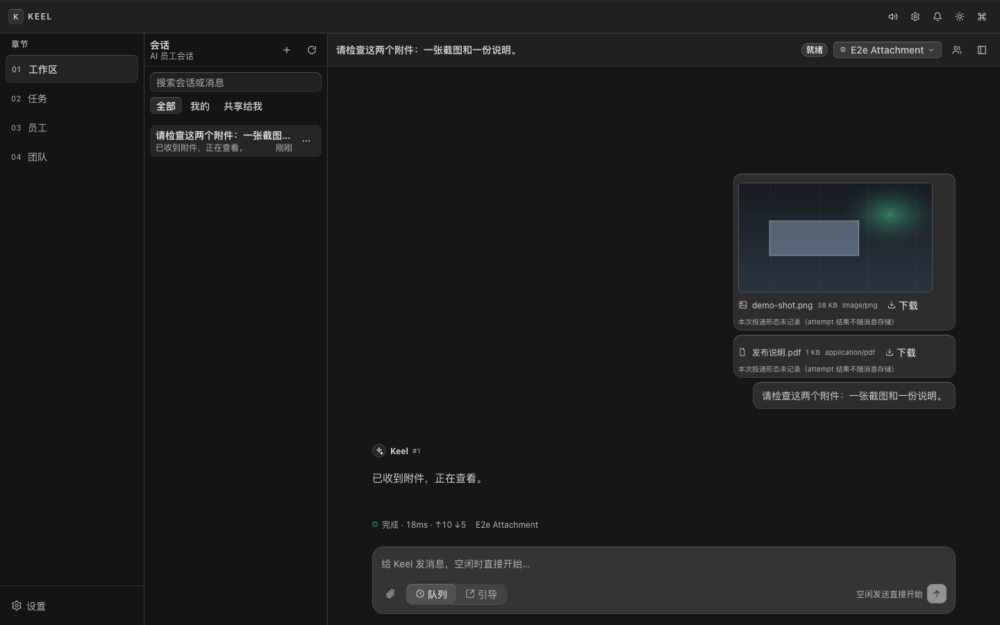
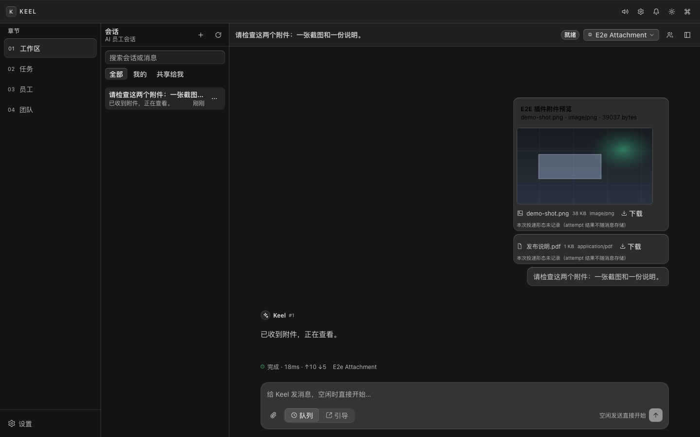
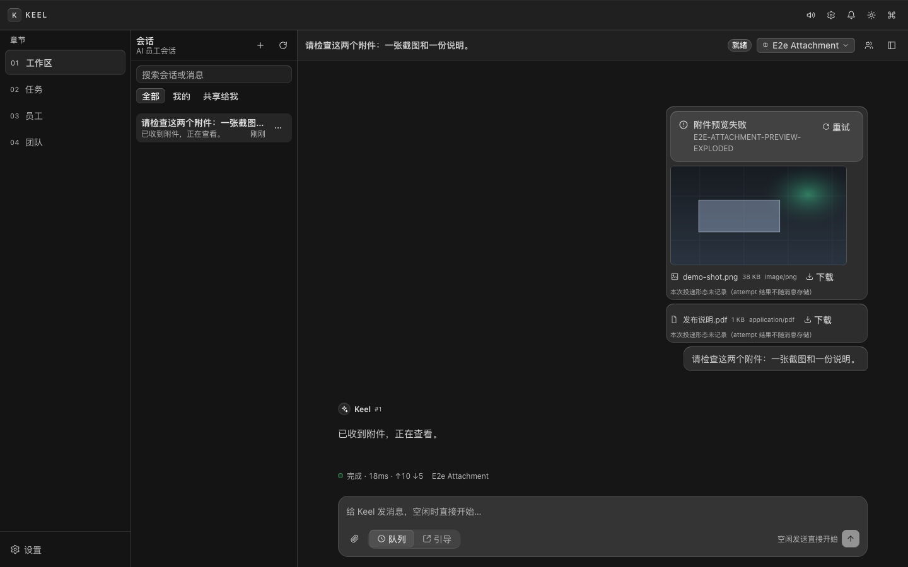
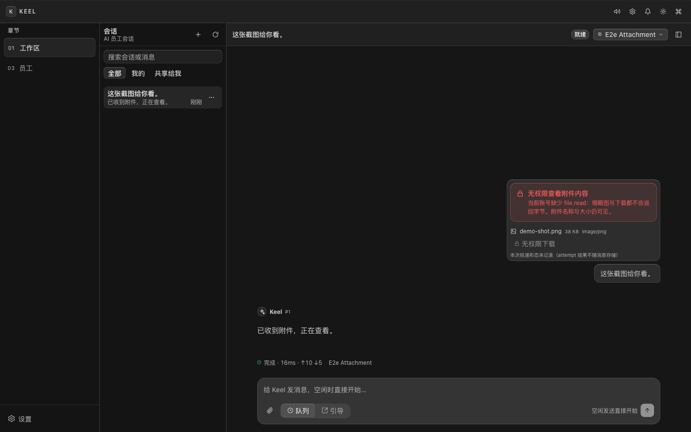
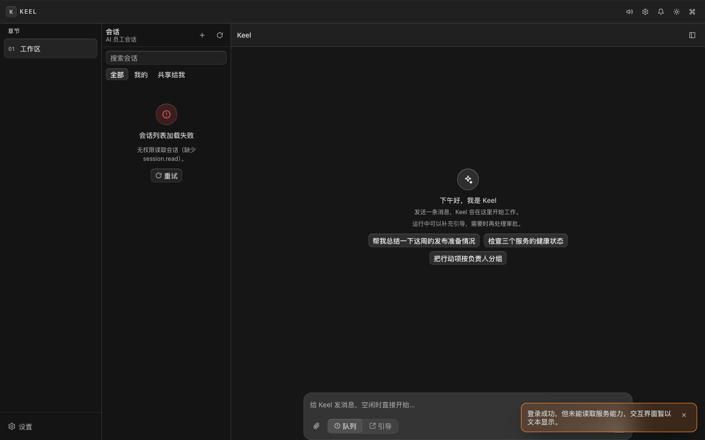
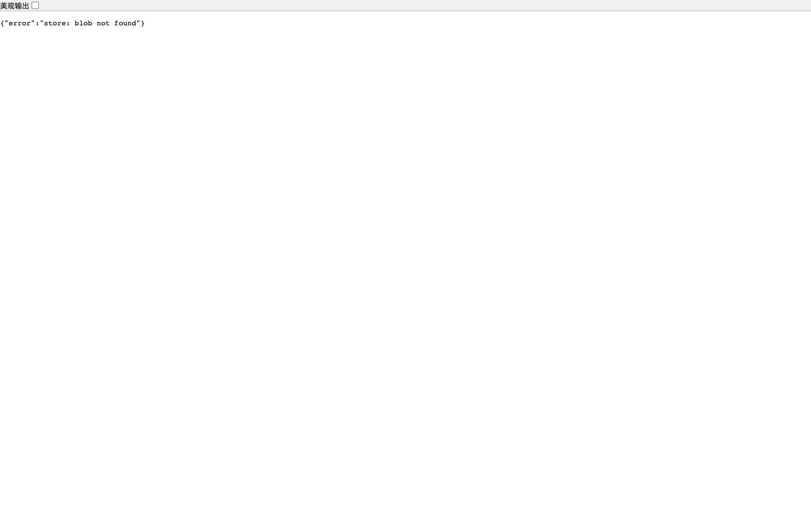
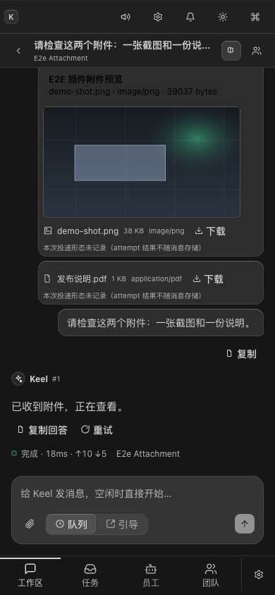
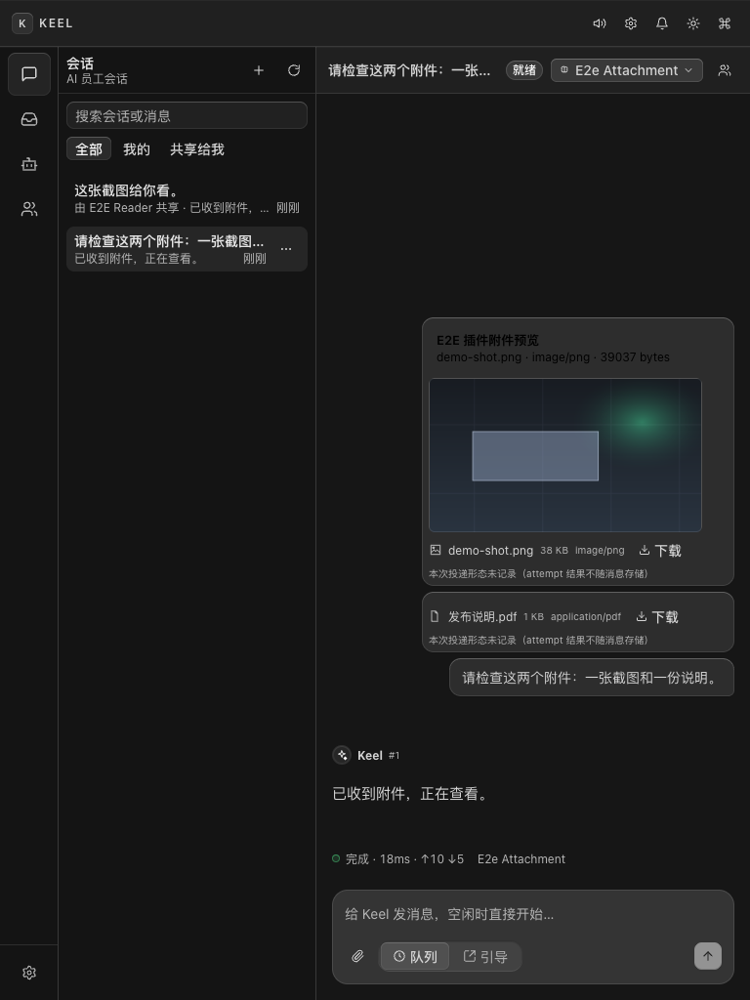
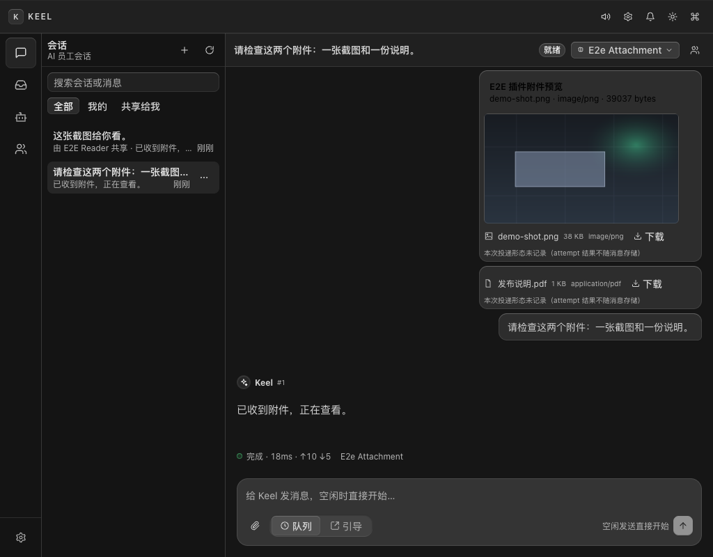
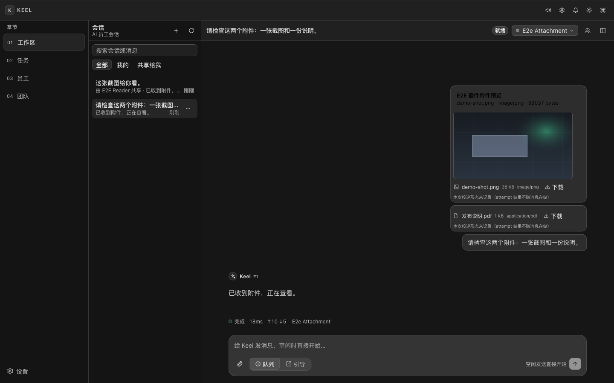

FDE2E · E2E Verification Report
keel-plugin-attachment · 真实浏览器 E2E
9/9 步通过，116/116 条断言通过；P0/P1 = 0；UNCOVERED=0。
A6 判定：通过P0/P1 = 0；P2 0 登记。
9步骤
9/9步骤通过
116/116断言通过
12截图
上传 → 输入 → canonical AttachmentPart 与模型投递
PASS- 操作
- 真实 HTTP 上传 PNG/PDF，提交带附件输入，读取 part 与模型请求
- 预期
- 原生 image_url + PDF 文本兜底，元数据无字节
断言 21/21
| 断言 | 预期 | 实际 | |
|---|---|---|---|
| ✓ | tenant A 服务健康 | 200 | 200 |
| ✓ | bot-operator 预设存在 | present | 5 |
| ✓ | 管理员进入 bot-operator | 200 | 200 |
| ✓ | 创建附件会话 Bot | 201 | 201 |
| ✓ | 上传 PNG 返回 fileId | 201 + fileId | 201 649dbdef-bfb2-45f8-a058-6894977f7aec |
| ✓ | 上传 PDF 返回 fileId | 201 + fileId | 201 bbfee886-d991-4c51-894d-c45b4d2f4ea7 |
| ✓ | 创建 Bot 所有的会话 | 201 + sessionId | 201 |
| ✓ | 提交带附件的输入 | 201/202 | 201 |
| ✓ | 运行结束 | done | done |
| ✓ | 事件流出现 user.message | user.message | user.message |
| ✓ | 事件只存 fileId 与展示元数据 | 2 refs, no bytes | 2 |
| ✓ | canonical AttachmentPart 可读 | 200 | 200 |
| ✓ | part 字段完整 | fileId/mime/kind/size/downloadUrl | {"fileId":"649dbdef-bfb2-45f8-a058-6894977f7aec","mime":"image/png","kind":"image","size":39037} |
| ✓ | part 含 thumbStatus 与 delivery | thumbStatus + delivery(native=false, reason) | ready / false |
| ✓ | part 不含字节/base64/CAS 路径 | metadata only | fileId,name,mime,size,kind,thumbStatus,thumbnailUrl,downloadUrl,delivery |
| ✓ | 缩略图终态 ready | ready | ready |
| ✓ | 缩略图可读（owner） | 200 + bytes | 200 10667 |
| ✓ | 附件字节可下载（owner） | 200 + bytes | 200 39037 |
| ✓ | 模型请求带 PNG 原生 image_url | image_url data URI | 1 |
| ✓ | PDF 走文本兜底（含 blobId 与 MIME） | blobId + application/pdf | 1 |
| ✓ | PDF 兜底不带字节 | no file bytes | no file_data |
关键日志
session=32de76de-52a9-48fa-8304-1a96f76d0e65 seq=1 png=649dbdef-bfb2-45f8-a058-6894977f7aec pdf=bbfee886-d991-4c51-894d-c45b4d2f4ea7
浏览器默认附件行（无插件）
PASS- 操作
- 登录 → 打开会话，检查默认行、缩略图与下载入口
- 预期
- 名称/大小/MIME/缩略图/下载可见，无插件预览
断言 6/6
| 断言 | 预期 | 实际 | |
|---|---|---|---|
| ✓ | 默认行显示 PNG 名称与大小 | name + size | true |
| ✓ | 默认行显示 PDF 名称与 MIME | name + mime | true |
| ✓ | 没有插件预览时只显示默认行 | no plugin preview | false |
| ✓ | 投递形态如实标注未记录 | delivery note | true |
| ✓ | 图片缩略图已绘制（naturalWidth > 0，无空白占位） | complete + naturalWidth > 0 | {"complete":true,"naturalWidth":320,"src":"http://127.0.0.1:13730/v1/files/649dbdef-bfb2-45f8-a058-6894977f7aec/thumbnail"} |
| ✓ | 1440 无横向溢出 | doc <= inner | {"inner":1440,"doc":1440,"body":1440} |

安装预览插件并渲染
PASS- 操作
- 安装 + durabile 审批 + 启用，重载页面打开会话
- 预期
- 审批展示认领；chunk 渲染且默认事实仍在
断言 7/7
| 断言 | 预期 | 实际 | |
|---|---|---|---|
| ✓ | 安装返回 202 审批并获批 | 202 → 200 → 201 | 202/200/201 |
| ✓ | 审批文本展示附件认领 | slot + part + mime | Install the plugin package /Users/kzf/Development/GitHub/jixoai/fde2e/.worktrees/keel-plugin-attachment-ui/.agents/reports/keel/attachment-e2e-2026-11-27-155512/e2e-plugins/e2e.attachment-preview? Ins |
| ✓ | 启用返回 200 | 200 | 200 |
| ✓ | inventory 投影带 part/mime | part=attachment, mime=image/png | {"slot":"keel.ui.message-part","form":"chunk","entry":"ui/preview.js","part":"attachment","mime":["image/png"],"plugin":"e2e.attachment-preview"} |
| ✓ | 插件预览在 PNG 行渲染 | preview text | true |
| ✓ | 默认事实与下载入口仍可见 | name + download | true |
| ✓ | PDF 行不受 PNG 插件影响 | no preview on PDF | false |

停用插件 → 回退默认行
PASS- 操作
- 停用 + 重载，检查预览撤销与默认行恢复
- 预期
- 无预览、无失败面，默认行可用
断言 6/6
| 断言 | 预期 | 实际 | |
|---|---|---|---|
| ✓ | 停用返回 200 | 200 | 200 |
| ✓ | inventory 状态 disabled | disabled | disabled |
| ✓ | 预览随停用撤销 | no preview | false |
| ✓ | 默认行恢复 | name + download | true |
| ✓ | 没有残留插件失败面 | 0 failures | 0 |
| ✓ | 卸载返回 200 | 200 | 200 |

预览抛错 → 回退且隔离
PASS- 操作
- 安装抛错插件，重载检查失败提示与默认行
- 预期
- 可解释失败；PDF 行不受影响
断言 6/6
| 断言 | 预期 | 实际 | |
|---|---|---|---|
| ✓ | 坏渲染器安装成功 | 201 | 201 |
| ✓ | 坏渲染器启用成功 | 200 | 200 |
| ✓ | 渲染抛错显示中文失败面 | 附件预览失败 + reason | true |
| ✓ | 不把技术码当主文案 | no ERR_PLUGIN | false |
| ✓ | 默认行保留 | name + download | true |
| ✓ | 单个失败不影响其他附件 | PDF row clean | 发布说明.pdf 1 KB application/pdf 下载 本次投递形态未记录（attempt 结果不随消息存储） |

reader 无 file.read → 无权限态
PASS- 操作
- 建组/账号/会话，reader 打开会话并请求附件
- 预期
- 元数据可见；缩略图/下载 403；UI 无权限态
断言 26/26
| 断言 | 预期 | 实际 | |
|---|---|---|---|
| ✓ | 创建 reader 权限组 | 201 + groupId | 201 |
| ✓ | 授予 session.read@own | 200 | 200 |
| ✓ | 授予 session.write@own | 200 | 200 |
| ✓ | 授予 app.read@tenant | 200 | 200 |
| ✓ | 授予 model.read@tenant | 200 | 200 |
| ✓ | 授予 plugin.read@tenant | 200 | 200 |
| ✓ | 授予 bot.read@own | 200 | 200 |
| ✓ | 授予 bot.manage@own | 200 | 200 |
| ✓ | 授予 bot.invoke@own | 200 | 200 |
| ✓ | 创建 reader 账号 | 201 + accountId | 201 |
| ✓ | reader 入组 | 200 | 200 |
| ✓ | 创建 reader 的 Bot | 201 | 201 |
| ✓ | reader 登录 | 200 | 200 |
| ✓ | reader 有 session.read、无 file.read | session.read=own, file.read absent | {"session":"own"} |
| ✓ | reader 创建自己的 Bot 会话 | 201 | 201 |
| ✓ | 管理员向 reader 会话提交附件 | 201/202 | 201 |
| ✓ | reader 会话有 user.message | seq | 1 |
| ✓ | reader 可读附件元数据（session.read） | 200 | 200 |
| ✓ | 元数据不含字节 | metadata only | fileId,name,mime,size,kind,thumbStatus,thumbnailUrl,downloadUrl,delivery |
| ✓ | reader 下载被拒（缺 file.read） | 403 | 403 |
| ✓ | 拒绝响应不含 PNG 字节 | no bytes | application/json; charset=utf-8 |
| ✓ | reader 缩略图被拒 | 403 | 403 |
| ✓ | UI 显示附件无权限态 | no-permission alert | true |
| ✓ | 无权限时仍可见名称与大小 | name + size | true |
| ✓ | 下载入口显示无权限且禁用 | disabled download | true |
| ✓ | 页面没有缩略图字节 | no thumbnail img | 0 |

outsider 无 session.read → 不泄露
PASS- 操作
- 登录无权限账号，请求会话/附件/字节
- 预期
- 403；UI 不展示会话或附件内容
断言 10/10
| 断言 | 预期 | 实际 | |
|---|---|---|---|
| ✓ | 创建无权限账号 | 201 | 201 |
| ✓ | outsider 登录 | 200 | 200 |
| ✓ | 无 session.read 不能列会话 | 403 | 403 |
| ✓ | 拒绝原因说明 session.read | session.read | session.read |
| ✓ | 无 session.read 不能读事件 | 403 | 403 |
| ✓ | 无 session.read 不能读附件投影 | 403 | 403 |
| ✓ | 无 session.read 不能读字节 | 403 | 403 |
| ✓ | 拒绝响应不含附件名/字节 | no name/bytes | 403 |
| ✓ | UI 不展示会话/附件内容 | no attachment text | false |
| ✓ | UI 显示真实权限态而非登录失败 | permission face, no login gate | 会话列表加载失败 无权限读取会话（缺少 session.read）。 重试 Keel 下午好，我是 Keel 发送一条消息，Keel 会在这里开始工作。 运行中可以补充引导，需要时再处理审批。 帮我总结一下这周的发布准备情况 检查三个服务的健康状态 把行动项按负责人分组 给 Keel 发消息，空闲时直接开始… 队列 引导 空闲发送直接开始 登录成功，但未能读取服务能力，交互界面暂以 文本显示。 |

跨租户：租户 B 读租户 A 附件
PASS- 操作
- 租户 B 登录，读 A 的文件/缩略图/part，含伪造租户头
- 预期
- 全部 404；对称检查 A 读 B 也 404
断言 13/13
| 断言 | 预期 | 实际 | |
|---|---|---|---|
| ✓ | 租户 B 登录 | 200 tenantId=4203d361-0165-4127-bacb-89d17d7b9978 | 200 4203d361-0165-4127-bacb-89d17d7b9978 |
| ✓ | 租户 B 上传自己的文件 | 201 | 201 |
| ✓ | 租户 B 读自己的文件 | 200 + bytes | 200 39037 |
| ✓ | 租户 B 读租户 A 附件 → 404 | 404 | 404 |
| ✓ | 租户 B 读租户 A 缩略图 → 404 | 404 | 404 |
| ✓ | 租户 B 读租户 A 附件 part → 404 | 404 | 404 |
| ✓ | 伪造 X-Tenant-ID 仍 404 | 404 | 404 |
| ✓ | 租户 A 读租户 B 文件 → 404（对称） | 404 | 404 |
| ✓ | 跨租户响应无字节 | no bytes | application/json; charset=utf-8 |
| ✓ | 浏览器（租户 B 会话）打开租户 A 附件 → 404 | 404 | 404 |
| ✓ | 浏览器 404 页不泄露字节 | error page | {"error":"store: blob not found"} |
| ✓ | 浏览器租户 B 缩略图 → 404 | 404 | 404 |
| ✓ | 浏览器租户 B 缩略图 404 页不泄露字节 | no bytes | {"error":"store: blob not found"} |


390/768/1024/1440 布局走查
PASS- 操作
- 四个视口打开附件会话，测量溢出与行框
- 预期
- 无横向溢出，附件行在视口内
断言 21/21
| 断言 | 预期 | 实际 | |
|---|---|---|---|
| ✓ | 布局走查前重新安装预览插件 | 201 | 201 |
| ✓ | 布局走查前重新启用预览插件 | 200 | 200 |
| ✓ | 布局走查前 inventory 带附件贡献 | part=attachment | {"slot":"keel.ui.message-part","form":"chunk","entry":"ui/preview.js","part":"attachment","mime":["image/png"],"plugin":"e2e.attachment-preview"} |
| ✓ | 390: 插件预览在场 | preview text | true |
| ✓ | 390: 无横向溢出 | doc <= inner | {"inner":390,"doc":390,"body":390} |
| ✓ | 390: 附件行在视口内 | inside viewport | {"x":54,"y":89,"width":320,"height":275} |
| ✓ | 390: 缩略图已绘制 | complete + naturalWidth > 0 | {"complete":true,"naturalWidth":320} |
| ✓ | 768: 插件预览在场 | preview text | true |
| ✓ | 768: 无横向溢出 | doc <= inner | {"inner":768,"doc":768,"body":768} |
| ✓ | 768: 附件行在视口内 | inside viewport | {"x":432,"y":325,"width":320,"height":275} |
| ✓ | 768: 缩略图已绘制 | complete + naturalWidth > 0 | {"complete":true,"naturalWidth":320} |
| ✓ | 1024: 插件预览在场 | preview text | true |
| ✓ | 1024: 无横向溢出 | doc <= inner | {"inner":1024,"doc":1024,"body":1024} |
| ✓ | 1024: 附件行在视口内 | inside viewport | {"x":688,"y":101,"width":320,"height":275} |
| ✓ | 1024: 缩略图已绘制 | complete + naturalWidth > 0 | {"complete":true,"naturalWidth":320} |
| ✓ | 1440: 插件预览在场 | preview text | true |
| ✓ | 1440: 无横向溢出 | doc <= inner | {"inner":1440,"doc":1440,"body":1440} |
| ✓ | 1440: 附件行在视口内 | inside viewport | {"x":1056,"y":201,"width":320,"height":275} |
| ✓ | 1440: 缩略图已绘制 | complete + naturalWidth > 0 | {"complete":true,"naturalWidth":320} |
| ✓ | 布局走查后停用预览插件 | 200 | 200 |
| ✓ | 布局走查后卸载预览插件 | 200 | 200 |




Changed files
改动文件覆盖表
展开 49 行
| 文件 | 变更 | 状态 | 面 | 证据 |
|---|---|---|---|---|
| openspec/changes/keel-plugin-attachment/evidence/go-test-attachment-httpapi-race.txt | changed | EXEMPT | change 文档/证据 | EXEMPT：显式白名单 |
| openspec/changes/keel-plugin-attachment/evidence/mutation-attachment.txt | changed | EXEMPT | change 文档/证据 | EXEMPT：显式白名单 |
| openspec/changes/keel-plugin-attachment/evidence/nsh-check.txt | changed | EXEMPT | change 文档/证据 | EXEMPT：显式白名单 |
| openspec/changes/keel-plugin-attachment/evidence/nsh-test-tui.txt | changed | EXEMPT | change 文档/证据 | EXEMPT：显式白名单 |
| openspec/changes/keel-plugin-attachment/evidence/openspec-validate.txt | changed | EXEMPT | change 文档/证据 | EXEMPT：显式白名单 |
| openspec/changes/keel-plugin-attachment/evidence/ui/screenshots/01-default-attachment-row.png | changed | EXEMPT | change 文档/证据 | EXEMPT：显式白名单 |
| openspec/changes/keel-plugin-attachment/evidence/ui/screenshots/02-plugin-preview.png | changed | EXEMPT | change 文档/证据 | EXEMPT：显式白名单 |
| openspec/changes/keel-plugin-attachment/evidence/ui/screenshots/03-disabled-default-row.png | changed | EXEMPT | change 文档/证据 | EXEMPT：显式白名单 |
| openspec/changes/keel-plugin-attachment/evidence/ui/screenshots/04-preview-failure-fallback.png | changed | EXEMPT | change 文档/证据 | EXEMPT：显式白名单 |
| openspec/changes/keel-plugin-attachment/evidence/ui/screenshots/05-reader-no-file-read.png | changed | EXEMPT | change 文档/证据 | EXEMPT：显式白名单 |
| openspec/changes/keel-plugin-attachment/evidence/ui/screenshots/06-outsider-no-session-read.png | changed | EXEMPT | change 文档/证据 | EXEMPT：显式白名单 |
| openspec/changes/keel-plugin-attachment/evidence/ui/screenshots/07-tenant-b-file-404.png | changed | EXEMPT | change 文档/证据 | EXEMPT：显式白名单 |
| openspec/changes/keel-plugin-attachment/evidence/ui/screenshots/08-tenant-b-thumbnail-404.png | changed | EXEMPT | change 文档/证据 | EXEMPT：显式白名单 |
| openspec/changes/keel-plugin-attachment/evidence/ui/screenshots/09-layout-390.png | changed | EXEMPT | change 文档/证据 | EXEMPT：显式白名单 |
| openspec/changes/keel-plugin-attachment/evidence/ui/screenshots/10-layout-768.png | changed | EXEMPT | change 文档/证据 | EXEMPT：显式白名单 |
| openspec/changes/keel-plugin-attachment/evidence/ui/screenshots/11-layout-1024.png | changed | EXEMPT | change 文档/证据 | EXEMPT：显式白名单 |
| openspec/changes/keel-plugin-attachment/evidence/ui/screenshots/12-layout-1440.png | changed | EXEMPT | change 文档/证据 | EXEMPT：显式白名单 |
| openspec/changes/keel-plugin-attachment/evidence/web-build.txt | changed | EXEMPT | change 文档/证据 | EXEMPT：显式白名单 |
| openspec/changes/keel-plugin-attachment/tasks.md | changed | EXEMPT | change 文档/证据 | EXEMPT：显式白名单 |
| scripts/keel-attachment-e2e/e2e.mjs | changed | EXEMPT | E2E 运行器（证据生产者） | EXEMPT：显式白名单 |
| scripts/keel-attachment-e2e/run.sh | changed | EXEMPT | E2E 运行器（证据生产者） | EXEMPT：显式白名单 |
| scripts/keel-attachment-e2e/scripted-model.mjs | changed | EXEMPT | E2E 运行器（证据生产者） | EXEMPT：显式白名单 |
| scripts/keel-attachment-e2e/seed-tenant/main.go | changed | EXEMPT | E2E 运行器（证据生产者） | EXEMPT：显式白名单 |
| web/src/data/attachment-link.test.ts | changed | COVERED | 同源策略单测 | nsh test --target tui |
| web/src/data/attachment-link.ts | changed | COVERED | 同源下载/打开入口 | 步骤 2、8 |
| web/src/data/attachments.test.ts | changed | COVERED | 附件投影状态/刷新/去重单测 | nsh test --target tui |
| web/src/data/attachments.ts | changed | COVERED | AttachmentPart 读取/缓存/权限 | 步骤 1、6 |
| web/src/data/contract.ts | changed | COVERED | AttachmentPart 契约 | 步骤 1、2 |
| web/src/data/fixture.ts | changed | COVERED | 演示数据（插件/附件） | TUI 测试 |
| web/src/data/http.ts | changed | COVERED | part 路由客户端 | 步骤 1、2 |
| web/src/data/store.ts | changed | COVERED | part 读取入口 / 403 权限面 | 步骤 2、6、7 |
| web/src/plugins/bridge.test.ts | changed | COVERED | 订阅清理单测 | nsh test --target tui |
| web/src/plugins/bridge.ts | changed | COVERED | 订阅/退订生命周期 | TUI bridge tests |
| web/src/plugins/bundled.ts | changed | COVERED | 测试 chunk 入口 | TUI harness |
| web/src/plugins/fixtures/hello-chunk.tsx | changed | COVERED | 测试 chunk | TUI harness |
| web/src/plugins/fixtures/throwing-chunk.tsx | changed | COVERED | 测试 chunk | TUI harness |
| web/src/plugins/mime.test.ts | changed | COVERED | MIME 单测 | nsh test --target tui |
| web/src/plugins/mime.ts | changed | COVERED | MIME 语法与匹配 | TUI registry tests |
| web/src/plugins/registry.test.ts | changed | COVERED | MIME/顺序/iframe 契约单测 | nsh test --target tui |
| web/src/plugins/registry.ts | changed | COVERED | 声明顺序 + MIME 选择 + bridge 生命周期 | TUI registry/bridge tests |
| web/src/plugins/slots.tsx | changed | COVERED | 预览槽位与回退面 | 步骤 3、4、5 |
| web/src/plugins/slots.tui.test.tsx | changed | COVERED | TUI 附件测试 | nsh test --target tui |
| web/src/plugins/sync.ts | changed | COVERED | inventory 顺序同步 | TUI registry tests |
| web/src/plugins/types.ts | changed | COVERED | 槽位契约 | 编译 + TUI 测试 |
| web/src/plugins/validation.ts | changed | COVERED | mime 声明 / iframe 契约校验 | TUI registry tests |
| web/src/screens/attachment-row.harness.tsx | changed | COVERED | 附件行 harness | TUI harness |
| web/src/screens/attachment-row.tsx | changed | COVERED | 附件行五态 / 缩略图 / 无权限 | 步骤 2、6 + TUI harness |
| web/src/screens/attachment-row.tui.test.tsx | changed | COVERED | 五态与回退渲染单测 | nsh test --target tui |
| web/src/screens/messages.tsx | changed | COVERED | 附件行 / 五态 / 插件槽位 | 步骤 2、3、4、6 |